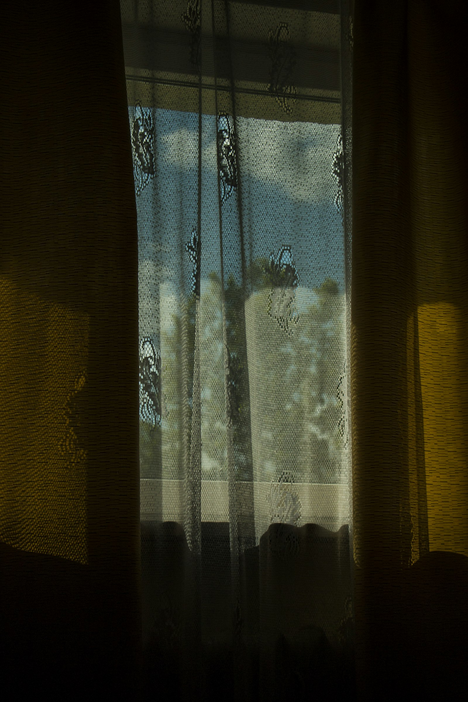
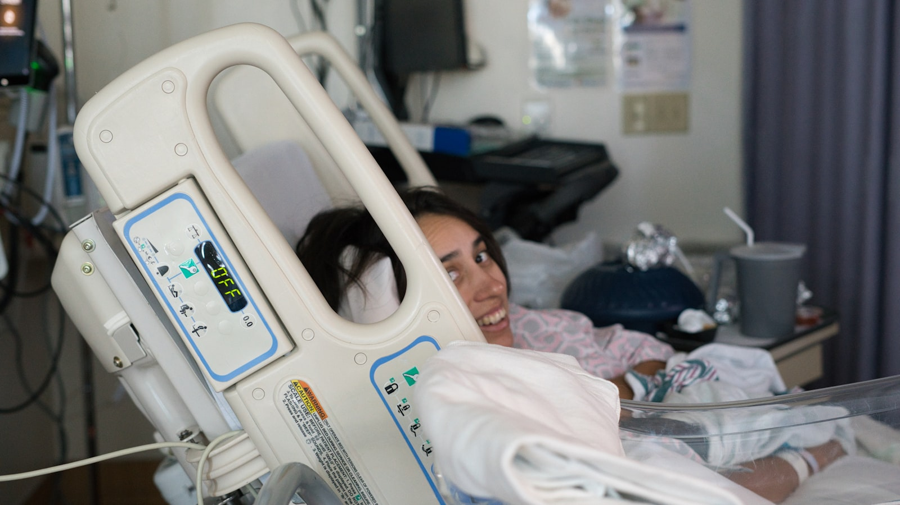
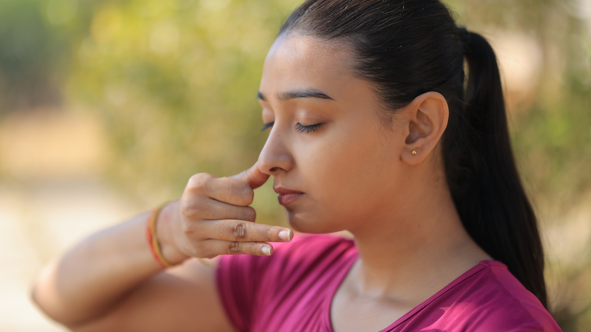
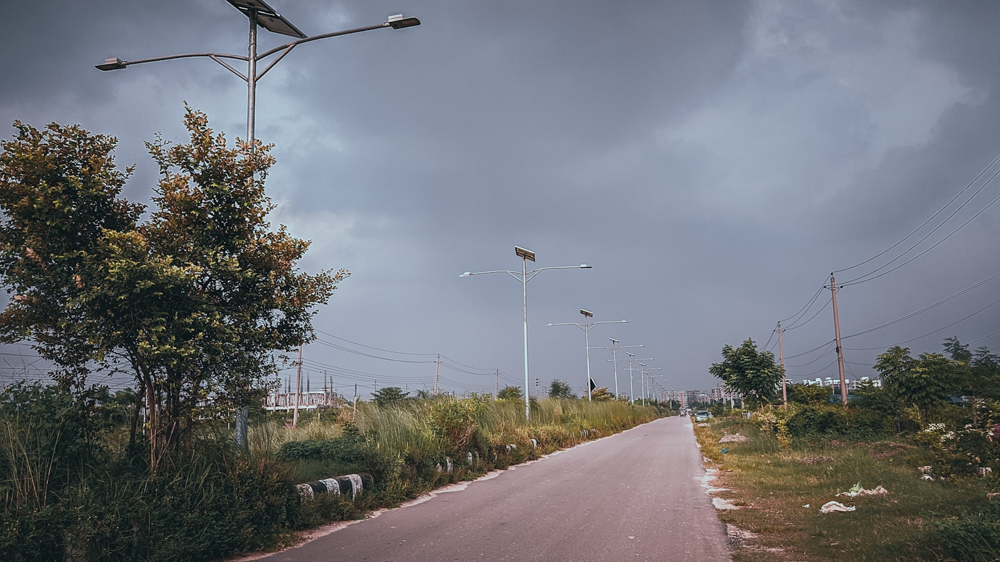
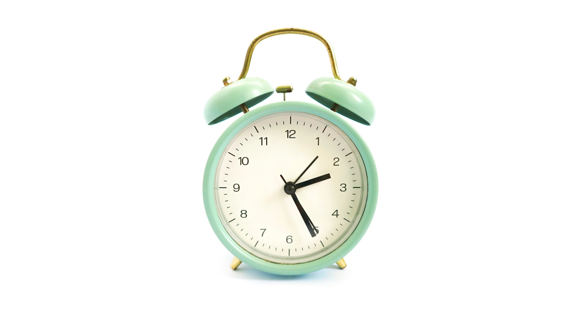
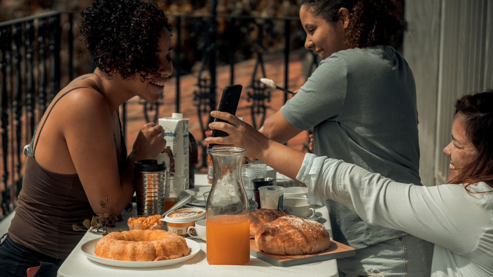
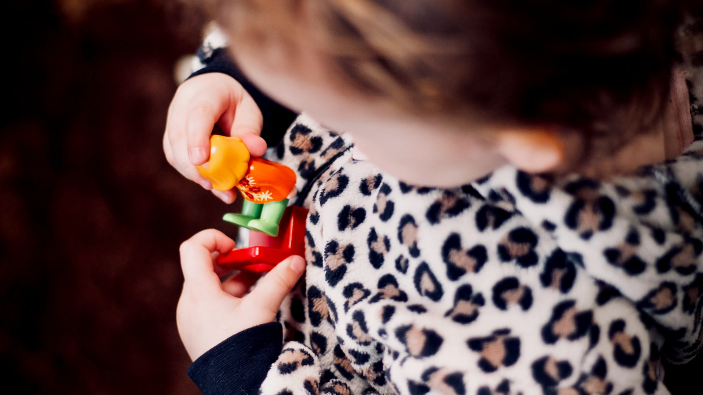
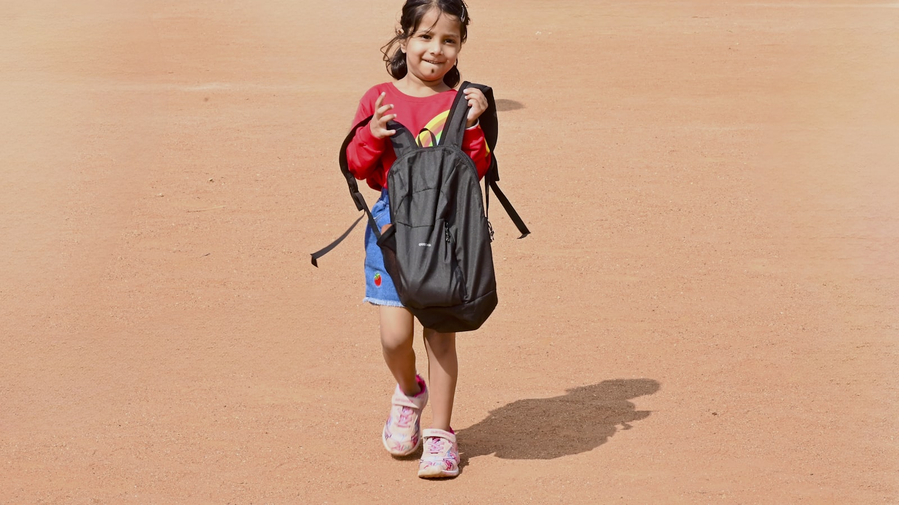
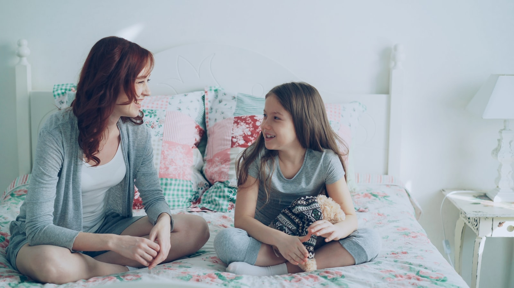
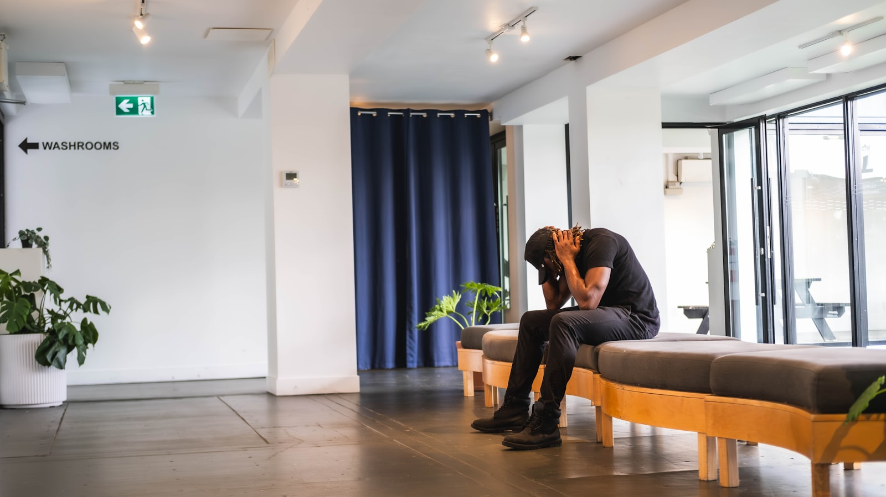

Самая новая статья
Лечение психогенной депрессии — Клинический протокол
Интеграция краткосрочной когнитивной реструктуризации и долгосрочной профилактической стратегии. На основе 17 лет клинической практики — полная ремиссия при лёгкой и умеренной психогенной депрессии без антидепрессантов.
Читать статью

Клинический протокол
Лечение психогенной депрессии — Клинический протокол
Краткосрочная когнитивная реструктуризация + долгосрочная профилактическая стратегия. 17 лет практики, лонгитюдные результаты, полная ремиссия без антидепрессантов.

Клинический протокол
Ночной энурез — Модифицированный алармный протокол
10-недельная структурированная программа. n=240 клинических случаев, полная ремиссия в 80% случаев. Водная нагрузка, активное участие родителей, упражнения Кегеля.

Клиническая психология
Как работает КПТ при депрессии?
Треугольник когнитивно-поведенческой терапии, автоматические мысли, поведенческая активация и доказательная эффективность. На основе рекомендаций Beck Institute, NICE и APA.

Клиническая психология
Депрессия vs Грусть — В чём разница?
7 клинических признаков по DSM-5, отличие от грусти, факторы риска. Распознавание большого депрессивного расстройства — по материалам APA и ВОЗ.
Клиническая психология
Антидепрессанты — Факты и мифы
Что такое СИОЗС, вызывают ли зависимость, можно ли принимать всю жизнь — доказательные ответы на самые частые вопросы.

Клиническая психология
Послеродовая депрессия — Распознать и лечить
Депрессия после родов встречается у 15–20% матерей. Отличие от «беби-блюза», факторы риска и пути лечения.
Клиническая психология
Сезонная депрессия (SAD) и световая терапия
Депрессия, начинающаяся зимой и проходящая весной — циркадный ритм, мелатонин и световая терапия 10 000 люкс.

Клиническая психология
Что делать во время панической атаки? — 3 техники
Дыхание 4-7-8, заземление 5-4-3-2-1 и техника принятия — проверенные инструменты во время приступа.
Клиническая психология
Что происходит в мозге во время панической атаки?
Миндалина, «ложная тревога», выброс адреналина — нейробиологический механизм панической атаки простым языком.

Клиническая психология
Агорафобия — от панических атак к социальной изоляции
Почему после панических атак человек не может выйти из дома? Как углубляется избегающее поведение и пути лечения.

Клиническая психология
Как работает КПТ при паническом расстройстве?
Специальный протокол когнитивно-поведенческой терапии при панике: психообразование, интероцептивная экспозиция, экспозиция in vivo.
Клиническая психология
7 мифов о панических атаках и научные ответы
«От панической атаки можно умереть», «потеряешь рассудок», «это слабость характера» — распространённые мифы и доказательные ответы.

Энурез
Ребёнок мочит постель по ночам — 5 распространённых заблуждений
«Само пройдёт», «пусть не пьёт воду», «нужно ругать» — распространённые убеждения и научные ответы на основе ICCS и NICE.
Энурез
ПМНЭ — Первичный моносимптоматический ночной энурез
4 вида энуреза, диагностические критерии, международный протокол лечения (ICCS 2020).

Энурез
Как работает алармное устройство? — Международный протокол
Принцип работы алармного устройства при энурезе (Павловское обусловливание) и 12-недельный протокол применения.
Энурез
Десмопрессин и имипрамин — Медикаменты
Когда назначают десмопрессин, почему имипрамин не рекомендуется — ответы из международных протоколов.

Энурез
7 практических советов для родителей
Как помочь ребёнку во время лечения — водный режим, срывы, поездки, мотивация.
Семейная терапия
5 принципов разрешения семейного конфликта
5 принципов на основе 40-летних исследований Института Готтмана — определяет риск развода с точностью 90%.
Семейная терапия
7 признаков токсичных отношений — Распознать и выйти
Критика, газлайтинг, изоляция, финансовый контроль — 7 клинических признаков, отличающих здоровые отношения от токсичных.
Семейная терапия
Семья на грани развода — Терапия или расставание?
Какие семьи можно спасти, а какие нет? Клинические критерии и протокол discernment counseling.
Семейная терапия
Как правильно спорить в паре?
Метод Готтмана — мягкое начало, 4 всадника, правило паузы, попытки к примирению. 7 правил конструктивного спора.

Семейная терапия
Как восстановить доверие после его утраты?
Измена, ложь, нарушение доверия — 4-этапный клинический протокол восстановления. Структурированный процесс на 12–24 месяца.
Детская терапия
Ваш подросток не разговаривает с вами — причина не в вас
13–17 лет — самый интенсивный период развития мозга. Почему родители кажутся «врагами» и что делать.

Детская терапия
Проблемы поведения ребёнка — Приказ-наказание vs Понимание
Агрессия, непослушание, отказ от школы — это непонятый эмоциональный сигнал. 5 типичных видов поведения и их истинные причины.
Детская терапия
Ребёнок после развода — Как помочь?
Развод не вредит ребёнку — вредит то, как он происходит. 5 практических правил и реакции по возрастам.

Детская терапия
Отказ от школы — 5 истинных причин
Социальная тревога, академические трудности, тревога разлуки, депрессия, травма. Протокол постепенного возвращения.

Детская терапия
Говорить ребёнку «нет» — Как выстроить здоровые границы?
Любовь и правила не противоречат друг другу. Стили воспитания по Баумринд и 5 практических ситуаций.

Клиническая психология
Социофобия — Это не просто застенчивость
Разница между застенчивостью и клинической социальной тревогой, критерии DSM-5 и пути лечения.
Клиническая психология
Страх публичных выступлений — КПТ и экспозиция
Глоссофобия — самая распространённая форма социофобии. КПТ, иерархия экспозиции и стратегия Toastmasters.
Клиническая психология
Покраснение и потливость — Социальные реакции
Эритрофобия, гипергидроз, дрожь — физические симптомы социальной тревоги и исследование «эффекта прожектора».

Клиническая психология
Социальная тревога vs Интроверсия — В чём разница?
Интроверсия — здоровая черта личности. Социальная тревога — клиническое состояние. Как отличить одно от другого.
Клиническая психология
Тревога в социальных сетях — Новая форма
FOMO, бесконечные сравнения, погоня за лайками — психологические трудности социальных сетей и стратегии вмешательства.

Для психологов
Хороший психолог никогда не остаётся без работы — Почему?
Почему профессиональные психологи всегда востребованы и что нужно, чтобы стать хорошим психологом. Карьерный путь и реальные финансовые перспективы.
Для психологов
Клиническая vs Общая психология — Разница и выбор
Разница между двумя видами психологии, кому какой путь выбрать и о гибридном подходе.
Для психологов
Как начинающему психологу найти первых клиентов?
Начало психологической практики после университета — нетворкинг, маркетинг, корпоративный сектор и план первых 6 месяцев.
Для психологов
Супервизия — Постоянный учитель психолога
Что такое супервизия, кому она необходима, индивидуальная vs групповая, как правильно выбрать супервизора.

Для психологов
Забота о себе для психолога — Защита от выгорания
Выгорание в психологической профессии — 40–60%. Модель Маслах, викарная травма и 30-дневный план самозаботы.